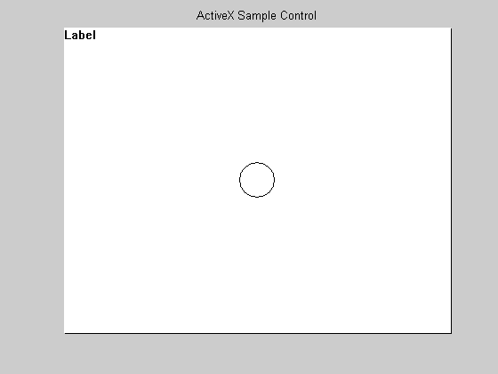

Programming with COM on Windows®
Component Object Model (COM), is a set of object-oriented technologies and tools that enable software developers to integrate application-specific components from different vendors into their own application solution.
COM helps in integrating significantly different features into one application in a relatively easy manner. For example, using COM, a developer may choose a database access component by one vendor, a business graph component by another, and integrate these into a mathematical analysis package produced by yet a third.
COM provides a framework for integrating reusable, binary software components into an application. Because components are implemented with compiled code, the source code may be written in any of the many programming languages that support COM. Upgrades to applications are simplified, as components can be simply swapped without the need to recompile the entire application. In addition, a component's location is transparent to the application, so components may be relocated to a separate process or even a remote system without having to modify the application.
Automation is a method of communication between COM clients and servers. It uses a single, standard COM interface called IDispatch. This interface enables the client to find out about, and invoke or access, methods and properties supported by a COM object. A client and server that communicate using IDispatch are known as an Automation client and Automation server. IDispatch is the only interface supported by MATLAB®. Custom and dual interfaces are not supported. MATLAB can communicate with both Automation servers and controls.
Contents
- Demo Requirements
- Creating COM Objects in MATLAB®
- Displaying Properties of COM Objects
- Changing COM Object Properties
- Displaying and Changing Enumerated Property Types
- Creating Custom Properties for a COM Object
- Displaying Methods of COM Objects
- Passing Arguments by Reference
- Event Handling
- Error Handling
- Destroying COM Objects
Demo Requirements
This demo runs on Windows® systems only.
The MWSamp2 object is already registered during MATLAB installation. However to get a better overview of how to work with COM components in general, it is assumed in this demo that the user has to register the control. It is also assumed that regsvr32.exe is located on the DOS path. The following are the steps needed to register a component on your machine.
1. Run the command "regsvr32 < path >" where < path > indicates the full path to the ocx/dll file supplied with the component.
2. Restart MATLAB.
cmd = sprintf('regsvr32 /s "%s"', ... fullfile(matlabroot,'toolbox','matlab','winfun',computer('arch'),'mwsamp2.ocx')); [s,c] = dos(cmd); % % This demo also requires Microsoft(R) Excel(R). if ~ispc errordlg('COM Demonstration is for PC only.') return end
Creating COM Objects in MATLAB®
The following commands create an Automation control object and an Automation server object in MATLAB:
% Create an Automation control object and put it in a figure. hf = figure; title('ActiveX Sample Control') set(gca,'Xtick',[],'Ytick',[],'Box','on') fp = get(hf,'Position'); mwsampPosition = get(hf,'DefaultAxesPosition').*fp([3 4 3 4]) ; mwsamp = actxcontrol('MWSAMP.MwsampCtrl.2', mwsampPosition+1, hf) % Create an Automation server object. hExcel = actxserver('excel.application')
mwsamp = COM.MWSAMP_MwsampCtrl_2 hExcel = COM.excel_application
Displaying Properties of COM Objects
The properties of COM objects can be displayed to the MATLAB command window using the GET function, and are displayed graphically using the property inspector. For a demonstration of the property inspector, take a look at the Graphical Interface section of this demo.
get(mwsamp)
Label: 'Label'
Radius: 20
Ret_IDispatch: [1x1 Interface.mwsamp2_ActiveX_Control_module._DMwsamp2]
Changing COM Object Properties
Properties of a COM object can be changed using the SET function.
% This makes the Excel(R) Automation server application visible. set(hExcel,'Visible',1)
The SET function returns a structure array if only the handle to the COM Object is passed as an argument.
out = set(mwsamp)
out =
Label: {}
Radius: {}
Ret_IDispatch: {}
You can also use the SET function to simultaneously change multiple properties of COM objects.
set(mwsamp,'Label','Mathworks Sample Control','Radius',40)
Displaying and Changing Enumerated Property Types
You can display and change properties with enumerated values using the SET and GET functions.
get(hExcel,'DefaultSaveFormat')
ans = xlExcel8
The SET function can be used to display all possible enumerated values for a specific property.
set(hExcel,'DefaultSaveFormat')
ans =
'xlAddIn'
'xlCSV'
'xlCSVMac'
'xlCSVMSDOS'
'xlCSVWindows'
'xlDBF2'
'xlDBF3'
'xlDBF4'
'xlDIF'
'xlExcel2'
'xlExcel2FarEast'
'xlExcel3'
'xlExcel4'
'xlExcel5'
'xlExcel5'
'xlExcel9795'
'xlExcel4Workbook'
'xlIntlAddIn'
'xlIntlMacro'
'xlWorkbookNormal'
'xlSYLK'
'xlTemplate'
'xlCurrentPlatformText'
'xlTextMac'
'xlTextMSDOS'
'xlTextPrinter'
'xlTextWindows'
'xlWJ2WD1'
'xlWK1'
'xlWK1ALL'
'xlWK1FMT'
'xlWK3'
'xlWK4'
'xlWK3FM3'
'xlWKS'
'xlWorks2FarEast'
'xlWQ1'
'xlWJ3'
'xlWJ3FJ3'
'xlUnicodeText'
'xlHtml'
'xlWebArchive'
'xlXMLSpreadsheet'
'xlExcel12'
'xlOpenXMLWorkbook'
'xlOpenXMLWorkbookMacroEnabled'
'xlOpenXMLTemplateMacroEnabled'
'xlTemplate'
'xlOpenXMLTemplate'
'xlAddIn'
'xlOpenXMLAddIn'
'xlExcel8'
'xlOpenDocumentSpreadsheet'
'xlOpenXMLWorkbook'
The SET function also enables you to set enumerated values for properties that support enumerated types.
set(hExcel,'DefaultSaveFormat','xlWorkbookNormal');
Creating Custom Properties for a COM Object
You can create custom properties for a COM object in MATLAB. For instance, you can make the handle to the Excel COM object a property of the MWSamp2 control and also make the handle to the MWSamp2 control a property of the Excel COM Object.
addproperty(mwsamp,'ExcelHandle'); addproperty(hExcel,'mwsampHandle'); addproperty(mwsamp,'TestValue');
set(mwsamp,'ExcelHandle',hExcel); set(mwsamp,'TestValue',rand); set(hExcel,'mwsampHandle',mwsamp);
get(hExcel,'mwsampHandle')
ans = COM.MWSAMP_MwsampCtrl_2
get(mwsamp,'ExcelHandle')
ans = COM.excel_application
get(mwsamp,'TestValue')
ans =
0.5476
Custom properties that are created using the ADDPROPERTY function can also be removed.
deleteproperty(mwsamp,'TestValue');
Displaying Methods of COM Objects
You can display methods of COM objects in MATLAB by using the INVOKE, METHODS and METHODSVIEW functions. METHODSVIEW provides a way to view the methods to the COM objects graphically. For a demonstration of the METHODSVIEW function, take a look at the Graphical Interface section of this demo.
invoke(hExcel)
Calculate = void Calculate(handle) DDEExecute = void DDEExecute(handle, int32, string) DDEInitiate = int32 DDEInitiate(handle, string, string) DDEPoke = void DDEPoke(handle, int32, Variant, Variant) DDERequest = Variant DDERequest(handle, int32, string) DDETerminate = void DDETerminate(handle, int32) Evaluate = Variant Evaluate(handle, Variant) ExecuteExcel4Macro = Variant ExecuteExcel4Macro(handle, string) Intersect = handle Intersect(handle, handle, handle, Variant(Optional)) Range = handle Range(handle, Variant, Variant(Optional)) Run = Variant Run(handle, Variant(Optional)) SendKeys = void SendKeys(handle, Variant, Variant(Optional)) Union = handle Union(handle, handle, handle, Variant(Optional)) ActivateMicrosoftApp = void ActivateMicrosoftApp(handle, XlMSApplication) AddCustomList = void AddCustomList(handle, Variant, Variant(Optional)) CentimetersToPoints = double CentimetersToPoints(handle, double) CheckSpelling = bool CheckSpelling(handle, string, Variant(Optional)) ConvertFormula = Variant ConvertFormula(handle, Variant, XlReferenceStyle, Variant(Optional)) DeleteCustomList = void DeleteCustomList(handle, int32) DoubleClick = void DoubleClick(handle) GetCustomListContents = Variant GetCustomListContents(handle, int32) GetCustomListNum = int32 GetCustomListNum(handle, Variant) GetOpenFilename = Variant GetOpenFilename(handle, Variant(Optional)) GetSaveAsFilename = Variant GetSaveAsFilename(handle, Variant(Optional)) Goto = void Goto(handle, Variant(Optional)) Help = void Help(handle, Variant(Optional)) InchesToPoints = double InchesToPoints(handle, double) InputBox = Variant InputBox(handle, string, Variant(Optional)) MacroOptions = void MacroOptions(handle, Variant(Optional)) MailLogoff = void MailLogoff(handle) MailLogon = void MailLogon(handle, Variant(Optional)) NextLetter = handle NextLetter(handle) OnKey = void OnKey(handle, string, Variant(Optional)) OnRepeat = void OnRepeat(handle, string, string) OnTime = void OnTime(handle, Variant, string, Variant(Optional)) OnUndo = void OnUndo(handle, string, string) Quit = void Quit(handle) RecordMacro = void RecordMacro(handle, Variant(Optional)) RegisterXLL = bool RegisterXLL(handle, string) Repeat = void Repeat(handle) SaveWorkspace = void SaveWorkspace(handle, Variant(Optional)) Undo = void Undo(handle) Volatile = void Volatile(handle, Variant(Optional)) Wait = bool Wait(handle, Variant) GetPhonetic = string GetPhonetic(handle, Variant(Optional)) CalculateFull = void CalculateFull(handle) FindFile = bool FindFile(handle) FileDialog = handle FileDialog(handle, MsoFileDialogType) CalculateFullRebuild = void CalculateFullRebuild(handle) CheckAbort = void CheckAbort(handle, Variant(Optional)) DisplayXMLSourcePane = void DisplayXMLSourcePane(handle, Variant(Optional)) CalculateUntilAsyncQueriesDone = void CalculateUntilAsyncQueriesDone(handle) SharePointVersion = int32 SharePointVersion(handle, string)
methods(mwsamp)
Methods for class COM.MWSAMP_MwsampCtrl_2: AboutBox GetVariantArray addproperty AddDouble GetVariantVector constructorargs Beep Redraw delete FireClickEvent RetErrorInfo deleteproperty FireEventArgs ReturnVTError events FireMouseDownEvent SetBSTR get Fire_Double_Click SetBSTRArray interfaces GetBSTR SetI4 invoke GetBSTRArray SetI4Array load GetI4 SetI4Vector move GetI4Array SetIDispatch propedit GetI4Vector SetR8 release GetIDispatch SetR8Array save GetR8 SetR8Vector send GetR8Array ShowVariant set GetR8Vector VariantOfTypeHandle
Calling methods of COM objects can be done in one of the following ways:
Using the INVOKE function
hExcelWorkbooks = get(hExcel,'Workbooks'); hExcelw = invoke(hExcelWorkbooks, 'Add');
Using the method name
hExcelRange = Range(hExcel,'A1:D4'); set(hExcelRange,'Value',rand(4));
Passing Arguments by Reference
Certain COM Objects expose methods with arguments that are also used as output. This is referred to as by-reference argument passing. In MATLAB, this is achieved by sending the output as the return from calling the method.
The GetFullMatrix method of a MATLAB Automation server is an example of a COM method that accepts arguments by reference. This example illustrates how passing arguments by reference is achieved in MATLAB.
% Register MATLAB session as the automation server version. regmatlabserver; hmatlab = actxserver('matlab.application.single')
hmatlab = COM.matlab_application_single
invoke(hmatlab)
GetFullMatrix = [SafeArray Pointer(double), SafeArray Pointer(double)] GetFullMatrix(handle, string, string, SafeArray Pointer(double), SafeArray Pointer(double)) PutFullMatrix = void PutFullMatrix(handle, string, string, SafeArray(double), SafeArray(double)) Execute = string Execute(handle, string) MinimizeCommandWindow = void MinimizeCommandWindow(handle) MaximizeCommandWindow = void MaximizeCommandWindow(handle) Quit = void Quit(handle) GetCharArray = string GetCharArray(handle, string, string) PutCharArray = void PutCharArray(handle, string, string, string) GetWorkspaceData = Variant(Pointer) GetWorkspaceData(handle, string, string) PutWorkspaceData = void PutWorkspaceData(handle, string, string, Variant) Feval = Variant(Pointer) Feval(handle, string, int32, Variant(Optional)) GetVariable = Variant GetVariable(handle, string, string)
get(hmatlab)
Visible: 1
Interact with the MATLAB running as an Automation server using the PutFullMatrix, Execute, and GetFullMatrix methods.
hmatlab.Execute('B2 = round(100*rand(1+round(10*rand)))');
In the next step, you can determine the size of the array to get from the MATLAB Automation server without needing to check manually.
Execute(hmatlab,'[r,c] = size(B2); B2_size = [r,c];'); [B_size, z_none] = GetFullMatrix(hmatlab,'B2_size','base',[0 0],[0,0]);
Since the size has been determined, you can just get the B2 data using the GetFullMatrix method.
[B, z_none] = GetFullMatrix(hmatlab,'B2','base',zeros(B_size),[0,0])
B =
91 16 96 66 32 45 50 89 24
13 97 66 17 95 65 96 96 93
91 96 4 71 3 71 34 55 35
63 49 85 3 44 75 59 14 20
10 80 93 28 38 28 22 15 25
28 14 68 5 77 68 75 26 62
55 42 76 10 80 66 26 84 47
96 92 74 82 19 16 51 25 35
96 79 39 69 49 12 70 81 83
z_none =
0 0
delete(hmatlab)
Event Handling
Events associated with Automation controls can be registered with event handler routines, and also unregistered after the Automation control object has been created in MATLAB.
events(hExcel)
NewWorkbook = void NewWorkbook(handle Wb) SheetSelectionChange = void SheetSelectionChange(handle Sh, handle Target) SheetBeforeDoubleClick = void SheetBeforeDoubleClick(handle Sh, handle Target, bool Cancel) SheetBeforeRightClick = void SheetBeforeRightClick(handle Sh, handle Target, bool Cancel) SheetActivate = void SheetActivate(handle Sh) SheetDeactivate = void SheetDeactivate(handle Sh) SheetCalculate = void SheetCalculate(handle Sh) SheetChange = void SheetChange(handle Sh, handle Target) WorkbookOpen = void WorkbookOpen(handle Wb) WorkbookActivate = void WorkbookActivate(handle Wb) WorkbookDeactivate = void WorkbookDeactivate(handle Wb) WorkbookBeforeClose = void WorkbookBeforeClose(handle Wb, bool Cancel) WorkbookBeforeSave = void WorkbookBeforeSave(handle Wb, bool SaveAsUI, bool Cancel) WorkbookBeforePrint = void WorkbookBeforePrint(handle Wb, bool Cancel) WorkbookNewSheet = void WorkbookNewSheet(handle Wb, handle Sh) WorkbookAddinInstall = void WorkbookAddinInstall(handle Wb) WorkbookAddinUninstall = void WorkbookAddinUninstall(handle Wb) WindowResize = void WindowResize(handle Wb, handle Wn) WindowActivate = void WindowActivate(handle Wb, handle Wn) WindowDeactivate = void WindowDeactivate(handle Wb, handle Wn) SheetFollowHyperlink = void SheetFollowHyperlink(handle Sh, handle Target) SheetPivotTableUpdate = void SheetPivotTableUpdate(handle Sh, handle Target) WorkbookPivotTableCloseConnection = void WorkbookPivotTableCloseConnection(handle Wb, handle Target) WorkbookPivotTableOpenConnection = void WorkbookPivotTableOpenConnection(handle Wb, handle Target) WorkbookSync = void WorkbookSync(handle Wb, Variant SyncEventType) WorkbookBeforeXmlImport = void WorkbookBeforeXmlImport(handle Wb, handle Map, string Url, bool IsRefresh, bool Cancel) WorkbookAfterXmlImport = void WorkbookAfterXmlImport(handle Wb, handle Map, bool IsRefresh, Variant Result) WorkbookBeforeXmlExport = void WorkbookBeforeXmlExport(handle Wb, handle Map, string Url, bool Cancel) WorkbookAfterXmlExport = void WorkbookAfterXmlExport(handle Wb, handle Map, string Url, Variant Result) WorkbookRowsetComplete = void WorkbookRowsetComplete(handle Wb, string Description, string Sheet, bool Success) AfterCalculate = void AfterCalculate()
The following command registers five of the supported events for MWSamp2 to the event handler, e_handler.m.
dbtype e_handler.m 1:3
1 function e_handler(varargin)
2
3 disp(['Event ',varargin{end},' triggered!!!'])
registerevent(mwsamp, {'Click' 'e_handler';...
'DblClick' 'e_handler';...
'MouseDown' 'e_handler';...
'Event_Args' 'e_handler'})
eventlisteners(mwsamp)
ans =
'Click' 'e_handler'
'DblClick' 'e_handler'
'MouseDown' 'e_handler'
'Event_Args' 'e_handler'
Another way of doing this would be to first register all the events, and then unregister the events that are not needed. First, restore the Automation control to its original state before any events were registered.
unregisterallevents(mwsamp) eventlisteners(mwsamp)
ans =
{}
Now register all the events that this COM object supports to the event handler, e_handler.m.
registerevent(mwsamp,'e_handler')
eventlisteners(mwsamp)
ans =
'Click' 'e_handler'
'DblClick' 'e_handler'
'MouseDown' 'e_handler'
'Event_Args' 'e_handler'
Next unregister any events you will not be needing.
unregisterevent(mwsamp,{'Event_Args' 'e_handler';...
'MouseDown' 'e_handler'})
eventlisteners(mwsamp)
ans =
'Click' 'e_handler'
'DblClick' 'e_handler'
Error Handling
If there is an error when invoking a method, the error thrown shows the source, a description of the error, the source help file, and help context ID, if supported by the COM Object.
set(hExcelw,'Saved',1); invoke(hExcelWorkbooks,'Close') try Open(hExcelWorkbooks,'thisfiledoesnotexist.xls') catch e disp(e.message) end
Invoke Error, Dispatch Exception: Source: Microsoft Office Excel Description: 'thisfiledoesnotexist.xls' could not be found. Check the spelling of the file name, and verify that the file location is correct. If you are trying to open the file from your list of most recently used files, make sure that the file has not been renamed, moved, or deleted. Help File: C:\Program Files (x86)\Microsoft Office\Office12\1033\XLMAIN11.CHM Help Context ID: 0
Destroying COM Objects
COM objects are destroyed in MATLAB when the handle to the object or the handle to one of the object's interfaces is passed to the DELETE function. The resources used by a particular object or interface are released when the handle of the object or interface is passed to the RELEASE function.
By displaying the contents of the MATLAB workspace using the WHOS command, you can observe the COM object and interface handles before and after using the RELEASE and DELETE functions.
whos mwsamp hExcel
Name Size Bytes Class Attributes hExcel 1x1 COM.excel_application mwsamp 1x1 COM.MWSAMP_MwsampCtrl_2
release(hExcelw) whos mwsamp hExcel
Name Size Bytes Class Attributes hExcel 1x1 COM.excel_application mwsamp 1x1 COM.MWSAMP_MwsampCtrl_2
Quit(hExcel) delete(hExcel); delete(mwsamp); close whos mwsamp hExcel
Name Size Bytes Class Attributes hExcel 1x1 handle mwsamp 1x1 handle